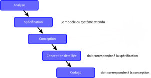
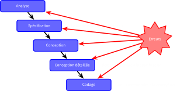
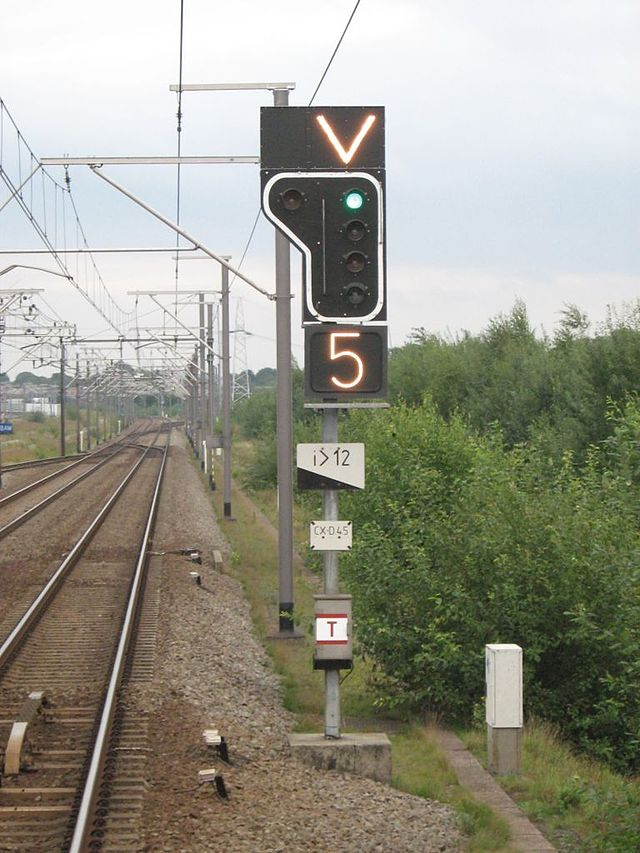
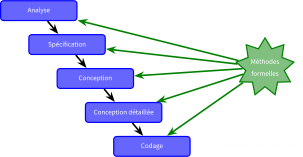
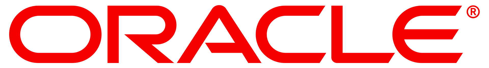
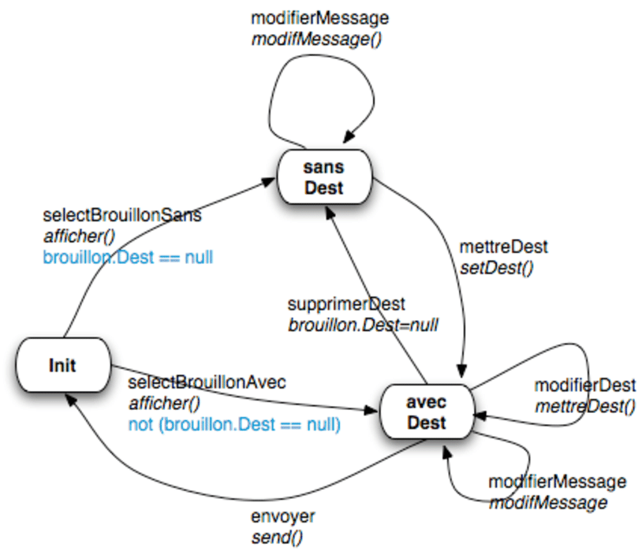
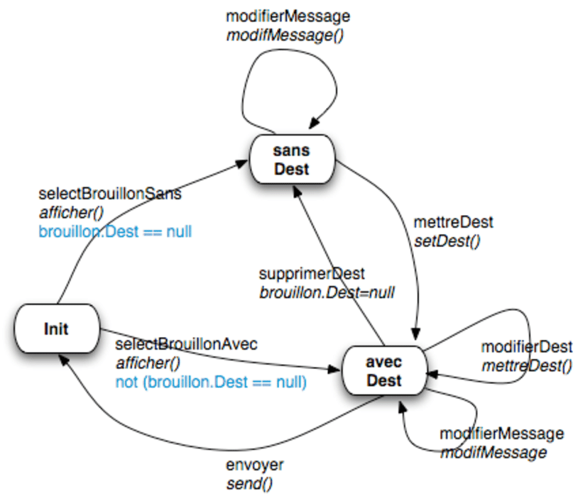
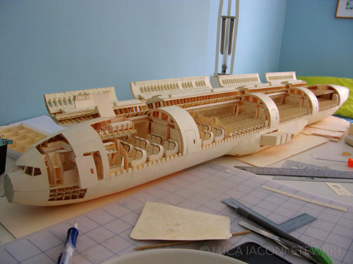
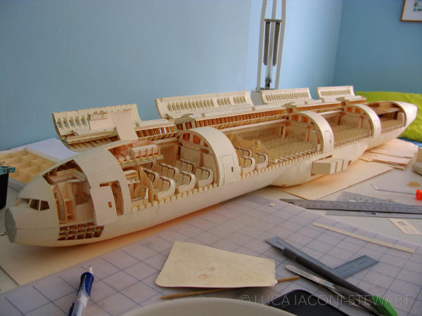

ST5 - Modélisation Fonctionnelle
et Régulation
Systèmes complexes et critiques à logiciels prépondérants
2A cursus Ingénieurs
CentraleSupelec
2023/2024
Idir AIT SADOUNE

-
Docteur en Informatique diplômé par l’ENSMA en 2010.
-
Thèse sur la modélisation et la vérification des services
par une approche basée sur le raffinement et sur la preuve.
-
Thèse sur la modélisation et la vérification des services
- Enseignant-chercheur au sein du département informatique de CentraleSupelec.
-
Chercheur au sein des pôles Modèles et Preuve
du LMF - Laboratoire Méthodes Formelles.
Discussion autours des attentes
des élèves

Les responsables de la ST
Le logiciel informatique


Cycle de développement


Des erreurs possibles à toutes les étapes du développement.
Logiciels critiques

Situations à éviter !!!


Solutions
- Les règles et les techniques de programmation.
- Les méthodologies de développement.
- Le support des langages de programmation.
- Le test.
- Les méthodes formelles.
Les Méthodes formelles
et la vérification
- Une méthode formelle
- Une méthode d’ingénierie pour le développement
de systèmes basée
sur des concepts logiques et mathématiques rigoureux. - Spécification formelle / Vérification formelle / Synthèse formelle
- Une méthode d’ingénierie pour le développement
de systèmes basée
- La vérification
- Vérifier/prouver si un système répond aux exigences identifiées
dans sa spécification en utilisant une méthode formelle.- déterminer ce que le logiciel est censé faire
- prouver que le logiciel fait ce qu'il est censé faire
- Vérifier/prouver si un système répond aux exigences identifiées
La place des méthodes formelles

Utiliser les méthodes formelles dans toutes les étapes.
Conclusion
Une analyse utilisant les méthodes formelles peut fournir la preuve
que le système est complet et correct vis à vis de ses exigences.
que le système est complet et correct vis à vis de ses exigences.
Qui recommande les méthodes formelles ?
- L'utilisation de spécifications formelles rend les exigences non ambiguës. (Norme européenne)
- L'utilisation des méthodes formelles a pour but d'éliminer les erreurs de spécification,
de conception et de codage.
(Norme aéronautique) - Pour les spécifications, les méthodes formelles sont recommandées et fournissent précision,
non ambiguïté et cohérence.
(Norme ferroviaire)
Exemples de normes - ferroviaire
- Les normes européennes 50126, 50128, 50129.
- des standards utilisés dans le domaine ferroviaire.
- requises pour les fournisseurs d’équipements de contrôle-commande

Les méthodes formelles recommandées
- Quelques méthodes formelles recommandées par les normes :
- "CSP, HOL, LOTOS, Temporal Logic, B Method, Model Checking, ..."
- page 103 de la norme EN 50128
Qui utilise les méthodes
formelles?


Evaluation Assurance Level (EAL)
Quelques mythes
- L’utilisation des méthodes formelles produit un logiciel parfait ?
- non-sens, une spécification formelle est un modèle du monde réel
- peut inclure des erreurs, des omissions et des malentendus

Quelques mythes
- Utiliser les méthodes formelles $\approx$ faire de la preuve de programme ?
- la modélisation d’un système est valable sans vérification de programmes
- la spécification formelle force à une analyse détaillée du système
 

Quelques mythes
- Les méthodes formelles que pour les systèmes critiques ?
- l’expérience industrielle montre que les coûts de développement
sont réduits pour tous les types de systèmes.- IHM multimodales
- Orchestration de microservices
- Validation de données
- ...
- l’expérience industrielle montre que les coûts de développement
Quelques mythes
- Les méthodes formelles sont uniquement pour les mathématiciens ?
- non-sens, les mathématiques employées sont élémentaires.
Quelques mythes
- Les méthodes formelles augmentent les coûts de développement ?
- non-prouvé, il y a un déplacement des coûts vers les premières étapes.
Quelques mythes
- Les clients ne peuvent pas comprendre les spécifications formelles.
- il faut les paraphraser en langage naturel, ou utiliser le prototypage..
 

Le cadre de la ST


L'objectif de la ST
Comment exprimer (modéliser) et vérifier les propriétés
comportementales des systèmes critiques?
Cette ST va vous aider à répondre à cette question !!!
Planning
Lundi 18 septembre 2023 - Amphi II, Eiffel
| 08h15 - 09h45 | Présentation de la séquence thématique |
|---|---|
| Idir AIT-SADOUNE (CentraleSupelec) | |
| 10h00 - 11h30 | Séminaire |
| Guillaume GIRAUD (RTE) |
Planning
Lundi 25 septembre 2023 - Amphi II, Eiffel
| 08h15 - 09h45 | Séminaire |
|---|---|
| Lucien PEREZ (IKOS Consulting) | |
| 10h00 - 11h30 | Présentation des EIs |
| Idir AIT-SADOUNE (CentraleSupelec) |
Planning
Mardi 26 septembre 2023 - Amphi II, Eiffel
| 08h15 - 09h45 | Séminaire |
|---|---|
| Michel BATTEUX (SystemX) | |
| 10h00 - 11h30 | Séminaire |
| Thierry LECOMTE (ClearSy) |
Note de prise de recul
- Rédaction d’une note de prise de recul individuelle qui sera évaluée selon un processus d'évaluation par les pairs.
- Longueur de 2 pages maximum rédigée en français/anglais
et portant sur les aspects suivants :- Description et compréhension de la thématique
- Enjeux/défis économiques, sociaux, industriels, actuels et futurs
- Verrous scientifiques et technologiques majeurs
- Domaines clés d’innovation pour l’ingénieur
- Une attention particulière sera portée à la clarté de cette note.
Contenu d'une note
Évaluation par les pairs
Processus d'évaluation
- Une note de prise de recul rédigée par chacun.
- 3 notes de prise de recul notées par chacun.
- Une note de prise de recul sera notée par 3 étudiants.
- Note finale : moyenne des notes reçues par une note.
Dates importantes (délai strict)
- Dépôt du travail : au plus tard le vendredi 20/10/2023 à 23h59.
- Évaluation : entre le 23/10/2023 et le 27/10/2023 à 23h59.
Le programme
Conception et vérification de systèmes critiques| Les logiques temporelles | 2 CMs, 2 TDs ($4 \times 1h30$) |
|---|---|
| Marc AIGUIER (CentraleSupelec) | |
| Le Model Checking | 1 CMs, 3 TDs ($4 \times 1h30$) |
| Paolo BALLARINI (CentraleSupelec) | |
| Les automates temporisés | 2 CMs, 4 TDs, 1 TP ($6 \times 1h30$) |
| Lina YE (CentraleSupelec) | |
| Les modèles stochastiques | 2 CMs, 3 TDs, 1 TP ($5 \times 1h30$) |
| Paolo BALLARINI (CentraleSupelec) |
Organisation du cours
- Date de début : lundi 18/09/2023 à 15h15 / Amphi II, Eiffel.
- Cours : en présentiel
- TD : en présentiel
- TP : devoir maison
- Polycopie, slides, énoncés des TD/TP, corrections des TD/TP en versions PDF disponibles sur Edunao.
- Polycopie en version papier disponible ?
- Le polycopie contient plus d'informations que ce qui sera vu en cours.
Les enseignements d'intégration
Présentation des sujets et des détails de l'organisation des EIs
le lundi 25/09/2023 à 10h00.
le lundi 25/09/2023 à 10h00.
Validation de la ST
- La ST5 valide une Unité d’Enseignement (UE) Séquence Thématique dédiée à la modélisation fonctionnelle et la régulation.
- L'évaluation est constituée des activités suivantes :
- modules contexte et enjeux: 0,2 ECTS,
- cours automatique et contrôle: 2,5 ECTS,
- cours modélisation système : 2 ECTS,
- cours spécifique : 2,5 ECTS,
- l'enseignement d’intégration (EI) : 1,8 ECTS.
- Pour valider une UE, un élève doit obtenir
une note $\geq 10/20$
à chacune des activités constituant l’UE.- L’EI est un cas particulier et doit être validé par une note $\geq 12/20$.
Evaluations
Organisation des rattrapages
L'évaluation des compétences
L'évaluation des compétences
Chaque responsable d'EI va détailler les Cij ciblées dans son projet.
Dominante Informatique
et Numérique en 3A
Mention : Science du Logiciel
https://wdi.centralesupelec.fr/infocs/Public/Scilog
Responsable : Frédéric BOULANGER
frederic.boulanger@centralesupelec.fr
https://wdi.centralesupelec.fr/infocs/Public/Scilog
Responsable : Frédéric BOULANGER
frederic.boulanger@centralesupelec.fr